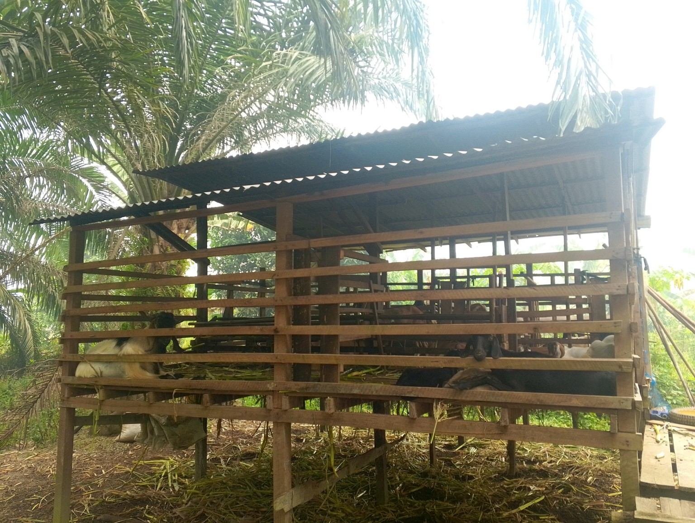

Potensi Ekonomi Seburing
Beragam kegiatan masyarakat menjadi bagian dari roda ekonomi Desa Seburing, mulai dari pertanian, perkebunan, peternakan hingga usaha lokal.

Peternakan
Peternakan kambing menjadi salah satu potensi usaha masyarakat yang dapat dikembangkan untuk mendukung ekonomi keluarga dan usaha produktif desa.

Pertanian
Lahan persawahan menjadi bagian penting dari aktivitas ekonomi dan sumber penghidupan masyarakat Desa Seburing.

Perkebunan
Perkebunan kelapa sawit merupakan salah satu potensi lahan yang dapat mendukung kegiatan ekonomi masyarakat.
Penguatan ekonomi masyarakat
Pengembangan ekonomi desa dapat diarahkan pada peningkatan produktivitas pertanian, peternakan dan perkebunan, pengolahan hasil, usaha mikro, pemasaran produk lokal, serta penguatan kelembagaan ekonomi desa.
Dokumentasi dan informasi pada halaman ini menjadi bagian dari upaya mengenalkan potensi ekonomi Desa Seburing secara lebih dekat.